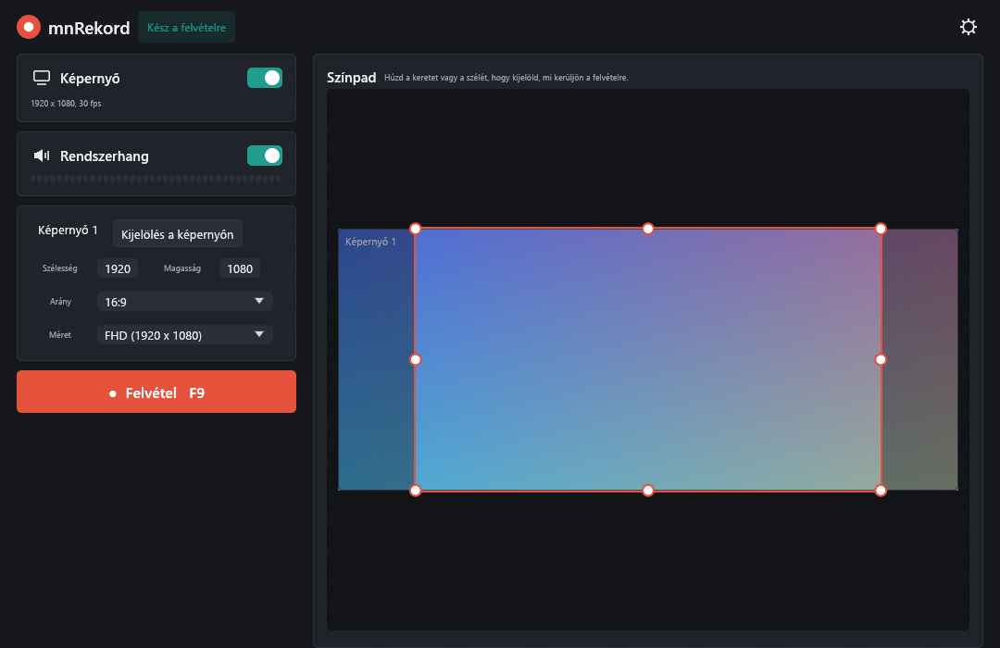
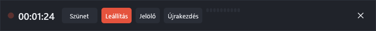
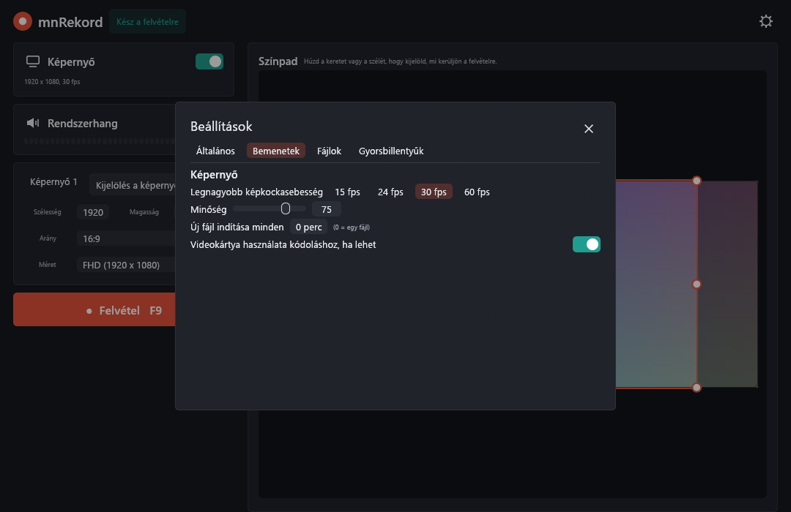
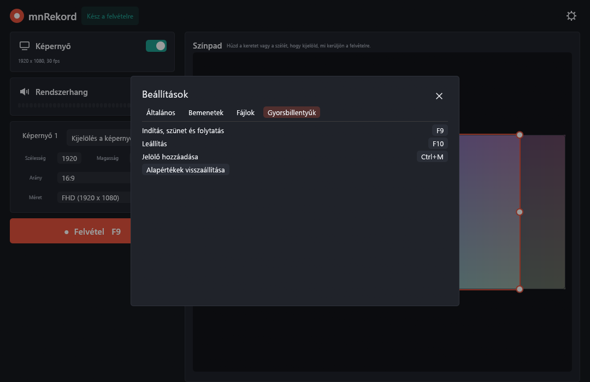

Rögzítsd a képernyőd.
Egyszerűen.
Az mnRekord egy kicsi, sötét képernyőrögzítő Windowsra. Válassz egy területet, monitort vagy ablakot, nyomd meg az F9-et, és kapsz egy MP4-et a számítógéped hangjával.

Mit tud
Ami egy oktatóvideóhoz, hibajelentéshez vagy gyors felvételhez kell, és nem sokkal több.
Terület, monitor vagy ablak
Húzz keretet az asztalod élő előnézetén, kattints egy ablakra, vagy rajzolj téglalapot közvetlenül a képernyőre nagyítóval.
Képarány-zárolás
16:9 vagy 9:16, kész méretekkel 360p-től 4K UHD-ig. A fogantyúk megtartják az arányt, és sosem akadnak el.
Ablak követése
Mozgasd az ablakot felvétel közben, a kép vele marad.
Rendszerhang
Rögzíti, amit hallasz, AAC-ként, a képpel szinkronban, szintjelzővel. Vagy csak a kijelölt ablak hangját.
H.264 minőségcsúszkával
Minőség 1-től 100-ig, 15–60 fps, GPU-s kódolás, ha van. Mindenhol lejátszható.
Egérmutató kiemelése
Lágy halo a mutató körül és gyűrű kattintáskor, hogy a nézők követni tudjanak.
Szünet, jelölők, részek
Szüneteltetés és folytatás, jelölők egy szövegfájlba, hosszú felvételek részekre bontása.
GIF egy kattintással
Az utolsó felvételből animált GIF.
Összeomlás utáni helyreállítás
A fájl töredékekben íródik. Összeomlás után az mnRekord felajánlja, hogy megtartja, ami fel lett véve.
Gyorsbillentyűk, tálca, parancssor
Globális gyorsbillentyűk, menüs tálcaikon és szkriptelhető parancsok.
Egyetlen kis fájl
Egy kb. 7 MB-os exe, Rustban írva. Magyar és angol felület. Fiók, felhő és reklám nélkül.
MIT licenc
Szabadon használható és módosítható. A forrás a GitHubon van.
Hogyan működik
A kezdéstől a kész videóig néhány kattintás.
- Válaszd ki, mit rögzítsünk. Húzd a keretet, kattints a Screen 1-re, vagy a Draw on screen-nel kattints egy ablakra.
- Válassz méretet. Állítsd be az arányt (16:9, 9:16 vagy szabad) és egy méretet, például FHD.
- Rögzíts. Nyomd meg az F9-et. 3-2-1 visszaszámlálás után egy vékony sáv váltja fel az ablakot.
- Állítsd le. Nyomd meg az F10-et. Az MP4 mentődik, és megnyílik a lejátszódban.

Állítsd be a magad módján
A képkockasebesség, a minőség, a fájlnevek, a gyorsbillentyűk és a mappák a beállításokban vannak.


A program magyarul és angolul is használható.
Szerezd meg
Windows 10 vagy 11, 64 bit. Töltsd le a telepítőt vagy az önálló exét a legújabb kiadásból.
Építsd meg magad:
git clone https://github.com/miklosnemeth/mnRekord
cd mnRekord
cargo build --release